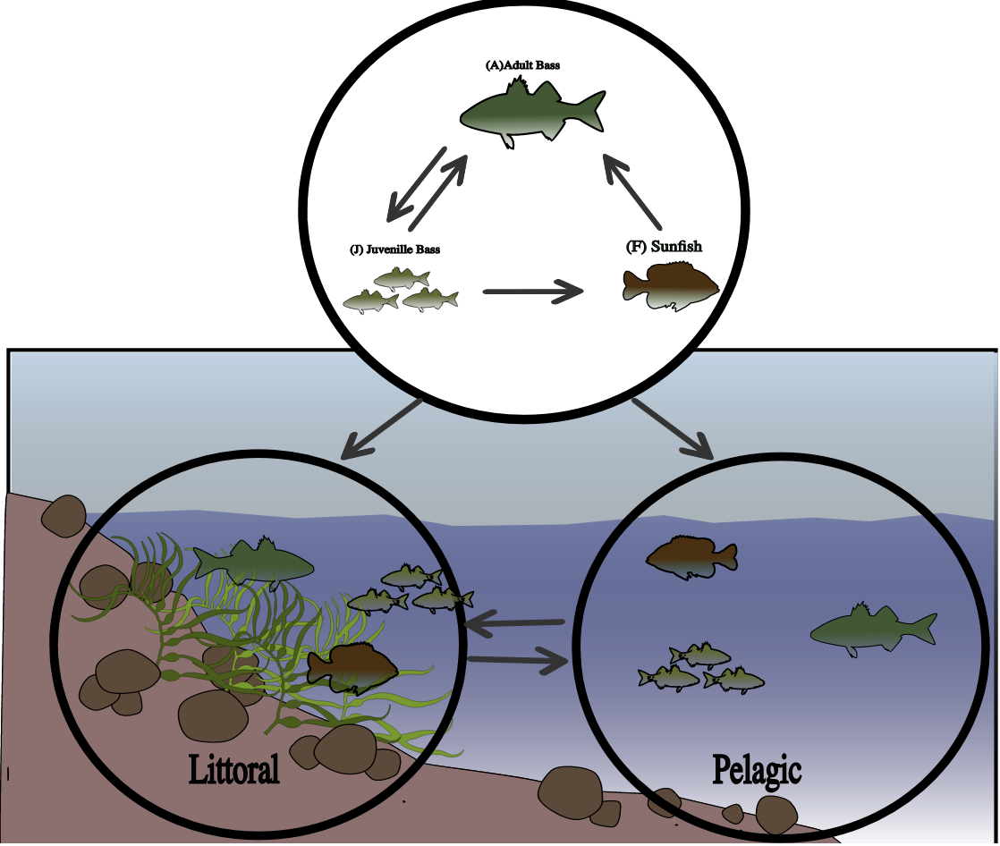

Metacommunity Stability
My master's research investigates how variations in dispersal and connectivity affect the stability of spatially structured metacommunities. I am currently working on expanding theoretical models to incorporate asymmetrical and non-uniform movement patterns and studying its influence on population persistence and community dynamics.
Regime Shifts
My undergraduate research focused on the dynamics of regime shifts in lake ecosystems, in which ecosystems transition between predator-dominant and forage-fish-dominant regimes. Using a two-patch tri-trophic food web model, I explored how predator-prey interactions and spatial heterogeneity influence these transitions.